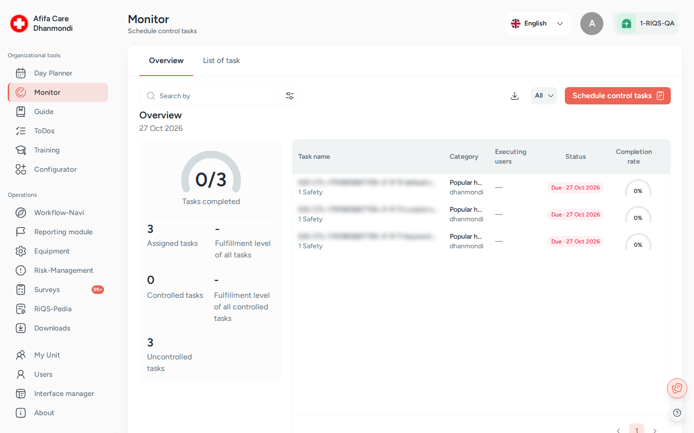

Monitoring¶
In one sentence: Plan regular control checks for a unit, record on the day how well each one was fulfilled, and see at a glance what has been checked and what has not. Menu: Monitor · Status: Live

Monitor, tab Overview: the control tasks due today and how many are done. Screens show test data.
What it is¶
A practice has things that must be checked again and again: the fridge temperature, the emergency kit, the cleaning of a room, the sterilisation log. Monitoring turns these into control tasks that appear on the unit's calendar on the right days. On the day, a responsible person records how well the task was fulfilled (for example 80%), who did the work, and any remarks.
Think of it as the inspection sheet on the back of a door, where someone ticks and scores each item every day, except that RIQS reminds people, moves forgotten checks to the next day, and shows management the fulfilment level of the whole unit.
The questions themselves are kept in a control task list, built in the Configurator (tab Monitor). Monitoring is where you schedule these lists for a unit, answer them, and review the results.
Which one do I use? Process Guide, Monitoring and Open Items are easy to mix up.
Use … when … Example Process Guide a job has several steps that people must work through "Morning opening: 8 steps" Monitor you want to check regularly how well something is done, with a score from 0 to 100% "Fridge temperature checked: daily" Open Items one thing must be done by one date "Replace the broken lamp in room 2 by Friday" Rule of thumb: many steps → Process Guide. A score → Monitoring. A single job → Open Items. If a control check shows a problem, create a To-Do from it (see How to create a To-Do from a control task).
Key terms¶
| Term | Meaning |
|---|---|
| Control task list (Task list) | A set of control tasks built in the Configurator, for one topic. |
| Control task | One check in the list, with a text, an optional keyword, and a scale (by default 0–100% in steps of 20%, with labels such as "Incomplete" and "Complete"). |
| Schedule (assign) | Putting selected control tasks on a unit's calendar, once (due date) or repeating. |
| Answer (control) | Recording the result on the day: fulfilment level, executing user(s), remarks. |
| Controlled / Uncontrolled | A task that has been answered / has not been answered yet. |
| Fulfilment level | The score given when answering. The overview shows the average. |
| Executing user | The person who actually did the work being checked. |
| Distinct list | One row per scheduled control task (the whole series). The all view shows the same rows with a status switch and delete. |
Who uses it¶
| Role | What they typically do here |
|---|---|
| RiQS Administrator | Supports clients; can schedule, answer and delete in any unit. |
| Group Administrator | Oversees control tasks across the organisations of the group. |
| Administrator | Oversees control tasks across the units of the organisation. |
| Power User | Sets up the unit's control plan, answers the daily checks, follows the fulfilment level, deletes old schedules. |
| Management | Schedules and updates control tasks for the unit, answers them, switches schedules active or inactive, and looks at the overview and reports. Cannot delete. |
| Professional | No access to Monitoring. Takes part through To-Dos created from a control task. |
How it works¶
Build list (Configurator) → Schedule → Due on the day → Answer (controlled) → Review / report
└─ not answered → moved to next day (optional) + email
- Build. A control task list is built in the Configurator, tab Monitor.
- Schedule. In Monitor, a Power User picks the unit, category, topic and task list(s), sets a due date or a repeat schedule, chooses email notifications, then picks the control tasks to schedule.
- Due. RIQS creates one task per date. It appears in the Overview of that day.
- Answer. On the scheduled day, a responsible person opens the task, sets the fulfilment level on the scale, picks the executing user(s), adds remarks and clicks Save Answer. The task is now controlled.
- Not answered? If Move unchecked task to next day is on, the task moves to the next day and the chosen people get an email. If Mail if task is not checked is on, the chosen people get an email.
- Review. The overview shows a progress circle and key figures. Lists can be filtered and downloaded.
Statuses you will see
| Status | Meaning |
|---|---|
| Due · date | Scheduled, not answered yet (uncontrolled) |
| Completed · date | Answered (controlled) |
| Active / Inactive | Whether the schedule is still running (switch in the list) |
How to …¶
How to schedule control tasks¶
Who can do this: RiQS Administrator, Group Administrator, Administrator, Power User, Management
- Open Monitor and make sure the right unit is selected at the top.
- Click Assign Task. The drawer opens on step 1 (Creation).
- Pick the Category and then the Sub-Category. Both are required.
- Pick one or more Topics, then one or more Task lists. Only lists for this unit and topic are offered.
- Set a Due Date, or switch on Mark as a recurring task and choose Daily, Weekly, Monthly or Yearly, how often it repeats, the week days, and start and end date. You can tick Avoid Weekends.
- Choose the Email notification options and the people for each: Mail if task is not checked, E-mail if fulfilment is below a percentage, and Move unchecked task to next day.
- Click Next. Tick the control tasks you want to schedule (or tick all).
- Optional: switch on Assign more afterwards to start again with an empty form after saving.
- Click Assign.
Result: A message confirms the scheduling. The tasks appear in the lists and on the overview of each due date.
How to answer a control task¶
Who can do this: RiQS Administrator, Group Administrator, Administrator, Power User, Management
- Open Monitor. The Overview shows today's tasks.
- Click an uncontrolled task.
- Set the fulfilment level on the scale.
- Pick the Executing user(s) (required). If nobody specific was assigned, all users of the unit are offered.
- Add Remarks if needed.
- Click Save Answer. Use Next task / Previous task to move on without going back to the list.
Result: The task shows Completed · date and counts as controlled. If you leave a task with unsaved changes, RIQS asks you to confirm.
How to change an answer¶
Who can do this: same as answering, and only on the scheduled day
- Open the controlled task.
- In the menu, choose Edit answer, change it and save.
How to review results and download a report¶
Who can do this: RiQS Administrator, Group Administrator, Administrator, Power User, Management
- On the Overview tab, see the progress circle (controlled vs. total) and the figures: assigned tasks, fulfilment level of all tasks, controlled tasks, fulfilment of controlled tasks, uncontrolled tasks.
- Use the view selector to show All, Controlled task or Uncontrolled task.
- Open Filters: date range, minimum/maximum fulfilment, topic, category, users, interval. Click Apply Filter.
- Switch to the list tab to see List of distinct control tasks or List of all control tasks.
- Click Download Report.
Result: An Excel file is downloaded: the reporting list from the overview, or the task list from the list tab.
How to change or stop a schedule¶
Who can do this: update and activate/deactivate: RiQS Administrator, Group Administrator, Administrator, Power User, Management. Delete: RiQS Administrator, Group Administrator, Administrator, Power User (in audit-safe mode, once tasks are assigned: RiQS Administrator only).
- In the list tab, open the row menu and choose Update task. Unit, topic and task list are fixed; you can change category, notifications, dates and which control tasks are included. Click Update.
- To pause a schedule, switch its status to Inactive in the all view.
- To delete, open the task and choose Delete. For a repeating task choose Selected monitoring tasks (only this one) or Present and future tasks. In the all view you can also tick several rows and click Delete.
Result: Changes apply from today on. Updating does not create a second schedule.
How to create a To-Do from a control task¶
Who can do this: RiQS Administrator, Group Administrator, Administrator, Power User, Management
- Open the control task.
- In the menu, choose Create open items.
- The To-Do form opens with the task details filled in. Choose the people and due date, then save.
Result: A To-Do is created in Open Items and sent to the chosen people.
Rules to know¶
- Answer on the day only. A control task can only be answered, and its answer edited, on its scheduled date. Other days show "Task can be answered on the scheduled date only".
- Executing user is required when answering.
- No controller field. You do not pick a "controller" when scheduling. Whoever answers is recorded; the executing users are the unit's users.
- Move unchecked task to next day: an unanswered task moves to the next day, and the chosen people get one email per move.
- Mail if task is not checked and E-mail if fulfilment is below a percentage send an email to the chosen people when the condition is met.
- Recurring limits: a daily or weekly schedule can run up to 3 years; monthly or yearly up to 10 years.
- Changing the unit in the schedule form clears category, lists, notifications and selection.
- Delete: Management and Professionals cannot delete control tasks. In audit-safe mode, tasks not yet assigned to anyone can be deleted by RiQS Administrators, Group Administrators, Administrators and Power Users; once tasks are assigned, only the RiQS Administrator can delete them.
- Not in the Cockpit: control tasks are not listed in the Cockpit. People must open Monitoring.
- Unit scope: a Power User only sees and schedules for the units they belong to.
- Planned: switching several schedules active or inactive at once (today one row at a time), and a reminder before a repeating schedule ends.
Who can do what¶
| Action | RiQS Admin | Group Admin | Admin | Power User | Management | Professional |
|---|---|---|---|---|---|---|
| See the Monitoring overview | ✅ | ✅ | ✅ | ✅ | ✅ | ❌ |
| See the list of control tasks | ✅ | ✅ | ✅ | ✅ | ✅ | ❌ |
| Schedule control tasks | ✅ | ✅ | ✅ | ✅ | ✅ | ❌ |
| Update a schedule | ✅ | ✅ | ✅ | ✅ | ✅ | ❌ |
| Answer a control task (and edit the answer) | ✅ | ✅ | ✅ | ✅ | ✅ | ❌ |
| Activate / deactivate | ✅ | ✅ | ✅ | ✅ | ✅ | ❌ |
| Delete (regular) | ✅ | ✅ | ✅ | ✅ | ❌ | ❌ |
| Delete (audit-safe, not yet assigned) | ✅ | ✅ | ✅ | ✅ | ❌ | ❌ |
| Delete (audit-safe, once assigned) | ✅ | ❌ | ❌ | ❌ | ❌ | ❌ |
| Create a To-Do from a control task | ✅ | ✅ | ✅ | ✅ | ✅ | ❌ |
| Download reports | ✅ | ✅ | ✅ | ✅ | ✅ | ❌ |
| Build control task lists (Configurator) | ✅ | ✅ | ✅ | ✅ | ✅ | ❌ |
The exact buttons a person sees come from the rights set up for each role. If a button is missing, see Roles & permissions.
Connected modules¶
- Configurator: control task lists and their scales are built on the Monitor tab.
- Open Items: a To-Do can be created from a control task, for example when a check shows a problem.
- Organisation & units: categories and sub-categories used when scheduling belong to the unit.
- Process Guide and Open Items: the other two ways to give people work. See "Which one do I use?" above.
Open questions¶
- Management and the list of control tasks: the rights table lets Management see and edit control tasks; the feature list says Management cannot see the list of control tasks. This page follows the rights table. Should the feature list be corrected?
- Professional and To-Dos from control tasks: the feature list says a Professional can complete "the To-Do linked to a control task". Does completing that To-Do also answer the control task, or are they separate?
- Controller field: the feature list still describes choosing a Controller when scheduling. The app no longer has this field. Is the feature list out of date?
- Sub-Category required: both category and sub-category are required when scheduling. A request to make the sub-category optional is open. Will it change?
- Reminder before a series ends: a reminder before a repeating schedule runs out has been requested but is not built. Is it planned?
Last reviewed: 2026-10-26